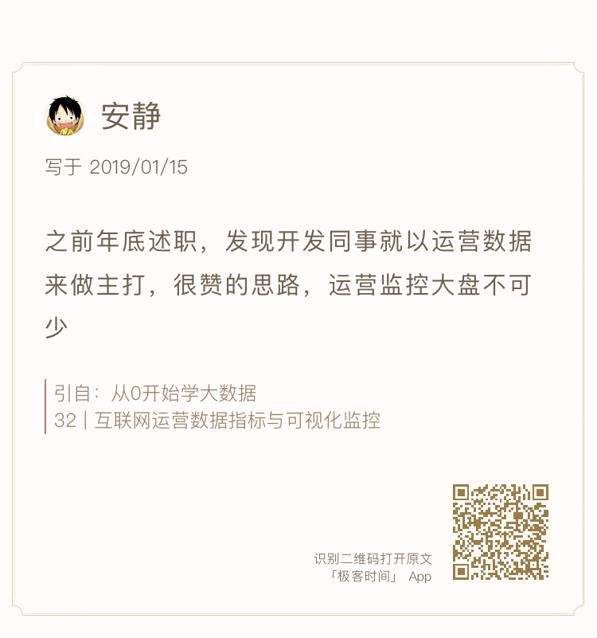

- 00 开篇词 为什么说每个软件工程师都应该懂大数据技术？.md.html
- 01 大数据技术发展史：大数据的前世今生.md.html
- 02 大数据应用发展史：从搜索引擎到人工智能.md.html
- 03 大数据应用领域：数据驱动一切.md.html
- 04 移动计算比移动数据更划算.md.html
- 05 从RAID看垂直伸缩到水平伸缩的演化.md.html
- 06 新技术层出不穷，HDFS依然是存储的王者.md.html
- 07 为什么说MapReduce既是编程模型又是计算框架？.md.html
- 08 MapReduce如何让数据完成一次旅行？.md.html
- 09 为什么我们管Yarn叫作资源调度框架？.md.html
- 10 模块答疑：我们能从Hadoop学到什么？.md.html
- 11 Hive是如何让MapReduce实现SQL操作的？.md.html
- 12 我们并没有觉得MapReduce速度慢，直到Spark出现.md.html
- 13 同样的本质，为何Spark可以更高效？.md.html
- 14 BigTable的开源实现：HBase.md.html
- 15 流式计算的代表：Storm、Flink、Spark Streaming.md.html
- 16 ZooKeeper是如何保证数据一致性的？.md.html
- 17 模块答疑：这么多技术，到底都能用在什么场景里？.md.html
- 18 如何自己开发一个大数据SQL引擎？.md.html
- 19 Spark的性能优化案例分析（上）.md.html
- 20 Spark的性能优化案例分析（下）.md.html
- 21 从阿里内部产品看海量数据处理系统的设计（上）：Doris的立项.md.html
- 22 从阿里内部产品看海量数据处理系统的设计（下）：架构与创新.md.html
- 23 大数据基准测试可以带来什么好处？.md.html
- 24 从大数据性能测试工具Dew看如何快速开发大数据系统.md.html
- 25 模块答疑：我能从大厂的大数据开发实践中学到什么？.md.html
- 26 互联网产品 + 大数据产品 = 大数据平台.md.html
- 27 大数据从哪里来？.md.html
- 28 知名大厂如何搭建大数据平台？.md.html
- 29 盘点可供中小企业参考的商业大数据平台.md.html
- 30 当大数据遇上物联网.md.html
- 31 模块答疑：为什么大数据平台至关重要？.md.html
- 32 互联网运营数据指标与可视化监控.md.html
- 33 一个电商网站订单下降的数据分析案例.md.html
- 34 A_B测试与灰度发布必知必会.md.html
- 35 如何利用大数据成为“增长黑客”？.md.html
- 36 模块答疑：为什么说数据驱动运营？.md.html
- 37 如何对数据进行分类和预测？.md.html
- 38 如何发掘数据之间的关系？.md.html
- 39 如何预测用户的喜好？.md.html
- 40 机器学习的数学原理是什么？.md.html
- 41 从感知机到神经网络算法.md.html
- 42 模块答疑：软件工程师如何进入人工智能领域？.md.html
- 所有的不确定都是机会——智慧写给你的新年寄语.md.html
- 第2季回归丨大数据之后，让我们回归后端.md.html
- 结束语 未来的你，有无限可能.md.html
- 捐赠
36 模块答疑：为什么说数据驱动运营？
你好，我是李智慧。在讲今天“数据驱动运营”这个话题前，我必须先铺垫两句。
当我们谈论大数据的时候，我们究竟在谈什么？是谈Hadoop、Spark这样的大数据技术产品？还是谈大数据分析、大数据算法与推荐系统这样的大数据应用？其实这些都是大数据的工具和手段，大数据的核心就是数据本身。数据就是一座矿山，大数据技术产品、大数据分析与算法是挖掘机、采矿车，你学了大数据，每天开着矿车忙忙碌碌，那你只是一个矿工，可能每天面对一座金山却视而不见。
数据比代码的地位要高得多，用途也大得多，做大数据的同学要意识到数据的重要性。数据的作用是无处不在的，不但能做统计分析、精准营销、智能推荐，还能做量化交易帮你自动赚钱，甚至能驱动公司运营，管理整个公司。今天这篇答疑就是想把数据的地位认识拔高一些，让你知道自己学大数据究竟能做什么。
关于中国互联网三巨头BAT（百度、阿里巴巴、腾讯）的企业组织与管理，江湖上有一种常见的说法是：百度是技术驱动的，阿里巴巴是运营驱动的，腾讯是产品驱动的。
也就是说，百度的公司增长与进步主要是通过工程师的技术创新实现的，工程师在技术上有所突破和创新后，调动公司产品、运营，甚至公关、法务方面的资源进一步扩大占领市场。工程师在公司拥有优势地位，在公司内能整合各方资源，驱动公司发展与进步。
相对应的，在阿里巴巴，运营人员拥有核心地位，马云的战略决策和运营指标下达给运营人员，运营人员千方百计通过各种手段，主要是产品和技术手段，完成运营指标，实现公司战略。在淘宝，所有员工都自称“小二”，站在运营角度开展工作，通过运营整合公司资源，驱动公司进步。
而在腾讯，公司的发展壮大则主要靠产品取胜，产品经理思考用户体验和产品特性，耐心打磨自己的产品，让用户在使用过程中被产品吸引，扩大产品的市场占有率。腾讯的核心人物马化腾和张小龙都称自己为产品经理，公司资源也围绕产品展开。
BAT作为业界翘楚，在成长过程中逐渐摸索出适合自身的组织管理和内部驱动方式，但是更多的互联网企业，包括一些知名的互联网企业，还没有找到科学的管理方式。这其中发展好一点的企业通常采用一种叫作“老板驱动型”的管理方式，老板事无巨细亲自关心业务，员工一旦没有老板的指示，就茫然失措，不知道自己该干什么。而差一点的企业则会进入到一种“老板也不知道怎么驱动型”的管理状态，大家忙忙碌碌，却像是在做布朗运动，不但不能进步，甚至连个像样的失败都没有。
一般的互联网企业的组织方式是下面这样的。
通常的工作模式是：首先，老板有个想法，或者运营有个点子，又或者市场有个反馈；然后运营人员把这个想法、点子、反馈变成一个业务需求提交给产品团队；接着产品经理和设计师进行需求分析、产品设计，将产品需求提给技术团队；最后工程师将这些功能开发完成，发布上线供用户使用。
一个点子从提出到开发上线，通常需要数周乃至数月的工作量；而开发资源一般总是紧缺的，产品需求需要进行开发排期，短则数天、长则数月。因此一个业务需求从提出到上线，要经过较长一段时间。往往工程师加班加点开发了一个新功能，上线以后这个功能的提出者已经失去了提出时的激情，甚至已经忘了这个功能。没有后续的推广运营，没有进一步的迭代增强，这个新功能就变成产品的一个“鸡肋”，直至无人问津。
大多数互联网企业，保守估计的话至少80%的业务需求没有实现最初期望的价值，相当一部分功能甚至完全没有起任何作用。5个工程师开发3周的红包功能最后只有两个用户领取，3个工程师开发一个月的活动小游戏只有区区几百个点击…这样的事例在现实中不胜枚举。
导致这个现象的一个原因是整个工作流程缺乏反馈，运营不断提需求，产品不断做设计，工程师忙着“搬砖”，自己做的工作对公司业务有多大价值却缺乏思考，为了工作而工作。除非有个头脑敏捷又精力旺盛的老板在其中不断干预，各个环节全方位参与，否则公司就会进入一种忙忙碌碌却没有进步的境地。而且即使有这样的老板，这样的公司也很难做大。
说了那么多问题，我们的目标还是要解决它。一个解决办法是引入业务数据监控，在提出一个新需求时，需要对价值进行预估：这个新功能可以有多少点击，可以提高多少留存、多少转化，对预期价值进行量化。产品和开发需要知道预期价值，如果对价值有疑惑，可以提出质疑，多方一起讨论，对需求进行完善。新功能上线后，对新功能的业务指标进行持续监控，检验是否达到当初的预期；如果没有，提出后续改进的措施。
从上面的图中你可以看到，通过业务数据的反馈从而使公司的工作流程变成一个闭环，用户数据会成为运营团队想法策略的重要输入，工作目标和团队协作围绕数据展开。老板只需要对数据提出合理的目标和期望，就可以驱动团队有效运作，使团队之间的合作或竞争都集中在实现公司商业价值这个根本目的上来。
因为数据是内部公开的，所有人都能看到，也迫使运营人员必须在提出需求时慎重思考，发布上线后持续跟进，尽力保证自己提出的预期指标能够实现；而不是想起一出是一出，决策时不审慎，上线后不跟进，滥用公司宝贵的设计和开发资源。用数据驱动公司业务不断发展，而公司的运营状况也通过数据不断反馈给所有人，所有人努力的方向和绩效的评估都通过业务数据关联在一起，并能够有效量化。
事实上，公司到了一定规模，产品功能越来越复杂，人员越来越多，不管用什么驱动，最后一定都是数据驱动。没有量化的数据，不足以凝聚团队的目标，甚至无法降低团队间的内耗。这个时候哪个部门能有效利用数据，能用数据说话，能用数据打动老板，哪个部门就能成为公司的驱动核心，在公司拥有更多话语权。我们学大数据，手里用的是技术，眼里要看到数据，要让数据为你所用。数据才是核心才是不可代替的，技术并不是。
数据，不管你用还是不用，它就在那里。但是它的规律与价值，你不去分析、挖掘、思考，它不会自己跳出来告诉你答案。顶尖的高手，总是能从看似不相干的事物之间找到其联系与规律，并加以利用，产生出化腐朽为神奇的功效。我们应该对数据保持敏感与好奇，不断将现实发生的事情与数据关联起来，去思考、去分析，用数据推断出来的结论指导现实的工作，再根据现实的反馈修正自己的方法与思维，顶尖高手就是在这样的训练中不断修炼出来的。
现实纷繁复杂，其呈现出来的表象距其本质通常相去甚远，甚至南辕北辙。根据表象见招拆招，只会让你陷入现实纷乱的漩涡，疲惫且无效，就像热锅上的那只蚂蚁。数据作为对事物的一次抽象，能够强迫你去思考事物背后的规律与本质，并在思考过程中逐渐把握事物发展的脉络与走向，帮你抢占先机、掌控局面。“君子生非异也，善假于物也”，用好数据，方能洞悉真相。
1月3日我做客“极客Live”，很高兴和同学们在直播中互动，当时由于时间关系，很多同学的问题来不及回答。正好今天在专栏的答疑里，我再选几个有代表性的问题，和你聊聊我的看法。
点击链接查看李智慧“学习大数据有哪些机遇”直播回顾。
没有大数据的开发经验，怎么去面试大数据的职位呢？
我认为越是好的公司，越是优秀的面试官，越是不在意你的经验，他们会更看重你的基础能力和解决问题的思路。所以你如果对自己的基础和素质有信心，你就多去面试，多接触机会，不要在经验上遮遮掩掩，不要怕面试失败，被那些不好的公司、差劲的面试官拒绝也许是一件好事。当然，你也应该只是缺乏经验，而不是对大数据一无所知，所以面试之前尽量对大数据技术原理和知识体系有完整的掌握，这也是我的专栏想达到的目的。
分布式系统相关的理论是每个互联网后端开发必备的吗？
是的，互联网技术架构就是分布式技术架构，互联网应用的主要技术挑战：大并发、大流量、高可用、高性能、可伸缩、可扩展，几乎都是用各种分布式技术解决的，如果不懂各种分布式技术及其理论，几乎不可能成为一名优秀的后端工程师。大数据技术实际上也是一种分布式技术，是分布式存储和分布式计算的一种。
请问老师，如何快速查看源码学习呢？
看论文和文档，了解主要架构原理和设计思路，想象如果是自己开发这个系统，该如何编程开发，设计模式和编程技巧其实就那些，学得多了、看得多了，有些代码不用看，猜也能猜得到会怎么写。
IDE环境debug源代码，跟踪代码执行，从调用主入口一路跟踪过去，核心代码也就差不多看好了。有些系统会有各种超时，比如debug会超时，就在关键代码输出日志，看关键输入输出是什么，进一步看代码如何实现。
网上也有各种主要开源产品的源码分析，看看这些文章，有时候也能事半功倍。
这些前提都需要自己的编程基础扎实，各种设计模式编程技巧掌握得好，不然一堆接口、各种多态，看不了几行就晕头转向了。当然看优秀开源产品的源码本身也是非常好的学习过程，一边看一边学。
最后还是“老规矩”，我整理了@安静、@桃园悠然在、@老男孩、@吴科的留言，希望同学们的留言对你也有所启发。



欢迎你点击“请朋友读”，把今天的文章分享给好友。也欢迎你写下自己的思考或疑问，与我和其他同学一起讨论。
© 2019 - 2023 Liangliang Lee. Powered by gin and hexo-theme-book.